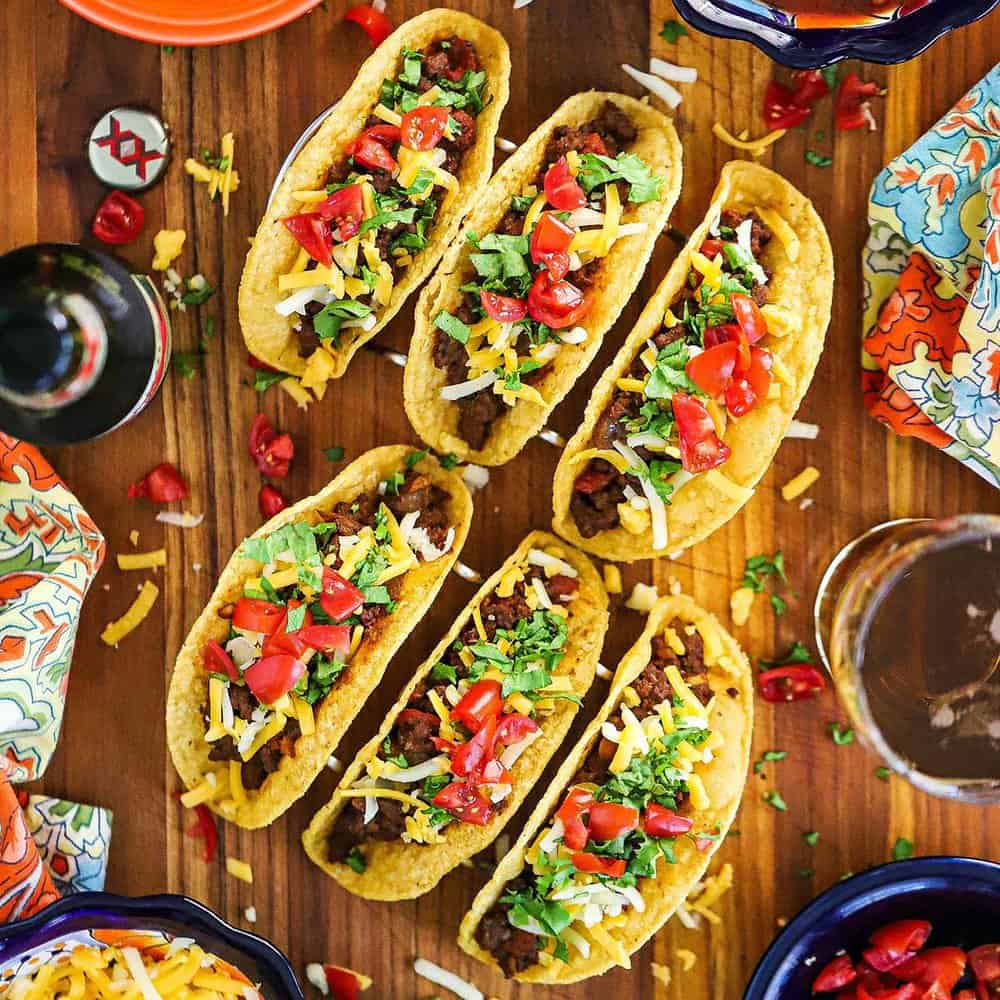

Tex Mex Tacos
Home

Description
A delicious deep dish pizza. You can add whatever toppings you want.
I like to keep it simple. You don't want to add too many toppingsthat are high in water content.
Too much water in the recipe can make the pizza dough soggy.
- Pizza Dough (make your own)
- Bell Pepper
- Onion
- Pepperoni
- Pizza Sauce
- Mushroom
- Mozzarella
- Add a good amount of oil to the cast iron. 3 TBSP or so
- Put your dough in the pan. Use your fingers to even it out. Make a
lip around the edges.
- Shred your Mozzarella
- Add your mozzarella to the dough on the bottom. Smash it down. Use it to help
keep the shape of the dough.
- Slice your veggies. Top the pizza with them. Add pepperonis if you'd like
- Add your sauce on top. The sauce goes on top. Cheese goes on bottom.